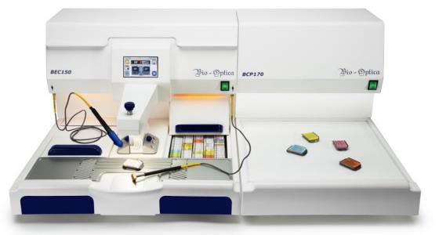

Un nodule au sein, une lésion de la peau, une tumeur retirée au bloc : avant de traiter, il faut savoir ce que c'est. Le laboratoire d'anatomie et cytologie pathologiques répond en regardant les tissus et les cellules eux-mêmes.
Définition
L'anatomopathologie (souvent abrégée « anapath ») est une spécialité médicale qui examine des tissus ou des cellules prélevés sur un patient pour poser un diagnostic : lésions d'origine infectieuse, inflammatoire ou cancéreuse. Au laboratoire, elle repose sur un enchaînement de techniques, de l'examen à l'œil nu jusqu'aux méthodes moléculaires et numériques.
Ce qui la distingue de la biologie clinique
Biologie clinique
Anatomopathologie
Ce qu'on étudie
Des substances mesurées dans le sang ou les liquides
La morphologie des tissus (histologie) et des cellules (cytologie)
Ce qu'on obtient
Des valeurs chiffrées
Un diagnostic de certitude
C'est un maillon essentiel du parcours de soins, surtout en cancérologie : le pathologiste confirme la nature d'une tumeur et donne les informations qui orientent le traitement (par exemple le statut HER2 dans le cancer du sein).
Rôle et missions
Diagnostic des maladies : nature des lésions (cancers, tumeurs bénignes, inflammations, infections).
Cytologie : étude des cellules isolées ou des liquides biologiques (frottis, cytoponction de la thyroïde).
Histopathologie : examen macroscopique et microscopique des tissus après fixation, inclusion en paraffine et coloration.
Analyses avancées : immunohistochimie ou biologie moléculaire, pour affiner le pronostic et guider les traitements ciblés (notamment en oncologie).
Biopsie ou pièce opératoire
Biopsie
Pièce opératoire (pièce de résection)
Ce que c'est
Un petit prélèvement ciblé : fragment de tissu ou de cellules, obtenu à l'aiguille, à la pince ou par endoscope
Un organe ou un morceau d'organe entier, avec la tumeur et une marge de tissu sain, retiré pendant une opération
À quoi elle sert
Poser ou confirmer un diagnostic (lésion bénigne ou maligne)
Analyser toute la lésion, préciser le stade exact, vérifier que les bords de la chirurgie sont sains
Fixation dans le formol
6 heures au minimum
24 heures ou plus
Délai du résultat
Quelques jours (autour de 4 jours)
Plus long (souvent 8 jours ou plus) : taille et examens plus complexes
Juste après le prélèvement, le tissu est plongé dans le formol pour stopper sa dégradation. Le pathologiste l'examine ensuite à l'œil nu, puis réalise des coupes fines, des colorations et des analyses (immunohistochimie ou génomique).
Une pièce fixée dans le formol. Photos du cours « Technologies de laboratoire d'analyses médicales ».
À retenir
Anapath : morphologie des tissus (histologie) et des cellules (cytologie), pour un diagnostic de certitude.
Biopsie : formol 6 h minimum, résultat vers 4 jours. Pièce opératoire : 24 h ou plus, 8 jours ou plus.
Du tissu à la lame : les techniques
Un fragment de tissu mou ne se coupe pas en tranches de quelques micromètres. Il faut le fixer, le durcir dans la paraffine, le couper, puis le colorer : sans coloration, la coupe est presque transparente au microscope.
Les techniques de base
Examen macroscopique et échantillonnage : le pathologiste décrit l'échantillon à l'œil nu (forme, taille, couleur), repère les zones suspectes et prélève des fragments représentatifs, placés dans des cassettes et fixés, en général au formol.
Déshydratation, inclusion et coupe : les tissus fixés sont déshydratés puis imprégnés de paraffine pour former des blocs solides. Au microtome, on réalise des coupes très fines, de 3 à 5 micromètres, déposées sur des lames de verre.
Coloration standard, Hématoxyline-Éosine (H&E) : la coloration de routine. L'hématoxyline colore les noyaux en bleu-violet, l'éosine colore le cytoplasme et les structures extracellulaires en rose. Le pathologiste voit ainsi la morphologie générale des cellules et des tissus.
Quand le H&E ne suffit pas : les tests ancillaires
Technique
Principe
Exemple du cours
Immunohistochimie (IHC)
Des anticorps dirigés contre des protéines spécifiques : la tumeur exprime-t-elle tel marqueur ? Aide à classer la maladie et à guider les thérapies ciblées.
Récepteurs hormonaux, HER2 dans le cancer du sein
Hybridation in situ (FISH, CISH)
Des sondes marquées détectent la présence ou l'amplification de séquences d'ADN ou d'ARN dans les cellules. FISH : en fluorescence.
Amplification du gène HER2, papillomavirus (HPV)
Tests moléculaires (PCR, séquençage)
Analyse directe de l'ADN ou de l'ARN extrait des tissus. La PCR amplifie des séquences pour détecter des mutations ; le séquençage de nouvelle génération (NGS) analyse de nombreux gènes à la fois, même sur échantillons fixés.
Mutation BRAF V600E dans le mélanome
Colorations spéciales
Colorations chimiques autres que le H&E, pour un composant précis.
Rouge Congo : amylose. Ziehl-Neelsen : bacilles de la tuberculose
Le numérique et l'intelligence artificielle
Des scanners haute résolution numérisent les lames en « lames virtuelles » : lecture sur écran, avis à distance, archivage plus simples.
L'intelligence artificielle quantifie des marqueurs (par exemple le pourcentage de cellules positives pour un anticorps) : une tâche longue et variable quand elle est faite à l'œil nu.
Exemple du cours : le CHU de Lille a remplacé l'usage systématique du microscope par des scanners et des logiciels d'IA pour lire les lames.
À retenir
Macroscopie et cassettes, puis paraffine et microtome (coupes de 3 à 5 µm), puis H&E.
Tests ancillaires : IHC (HER2), FISH ou CISH (gène HER2, HPV), PCR ou NGS (BRAF V600E), colorations spéciales (rouge Congo, Ziehl-Neelsen).
Du flacon au compte rendu
Du flacon qui arrive à l'accueil au compte rendu signé, un prélèvement passe par une dizaine de postes. Chaque étape a son appareil, et une erreur d'identification au début se paie à la fin.
Trois phases
Réception et préparation
Réception et enregistrement : les prélèvements (biopsies, pièces opératoires, liquides cytologiques) arrivent avec une fiche de renseignements cliniques. Chacun reçoit un numéro d'identification unique, suivi par le système informatique (LIS, Pathology LIS).
Fixation : immersion immédiate dans un fixateur, en général du formol tamponné, pour stopper la dégradation cellulaire.
Macroscopie et échantillonnage : description visuelle de la pièce par le médecin ou le technicien, découpe des zones d'intérêt placées dans de petites cassettes en plastique.
Déshydratation et inclusion en paraffine : les cassettes passent dans des automates (processeurs de tissus) qui retirent l'eau, la remplacent par de la paraffine, puis on forme des blocs solides.
Phase analytique : coupe, coloration, examen
Coupe (microtomie) : le bloc est taillé en tranches de quelques micromètres au microtome, puis déposé sur des lames de verre.
Coloration : colorations standard (H&E) ou techniques spéciales (immunohistochimie, biologie moléculaire, cytométrie en flux) selon la demande.
Montage et numérisation : pose d'une lamelle de protection, ou numérisation de la lame par un scanner.
Examen microscopique : le médecin anatomopathologiste lit et interprète les lames pour poser un diagnostic lésionnel ou tumoral.
Phase post-analytique : validation et archivage
Compte rendu : le pathologiste rédige le rapport final (données histologiques, immunohistochimiques et moléculaires), validé puis transmis au clinicien ou au chirurgien.
Archivage : lames et blocs de paraffine conservés longtemps, selon la réglementation ; images et données archivées dans le système informatique du laboratoire.
Les équipements, étape par étape
Phase
Activité
Équipements
Préparation
Réception et enregistrement
Étiquetage, impression laser de cassettes
Fixation (formol)
Table de macroscopie, distributeur automatique de formol, armoire ventilée
Déshydratation et inclusion
Automate d'imprégnation des tissus, station d'enrobage
Coupe (microtomie)
Microtome, cryostat
Coloration
Automate de coloration des lames, colleuse de lames
Analyse
Montage, numérisation, examen
Microscopes, scanners de lames
Post-analytique
Compte rendu
Microscopes, scanners de lames
Archivage
Armoires ventilées
Le cryostat (microtome à congélation) sert aux examens extemporanés : des coupes rapides sur tissu congelé pendant une intervention chirurgicale.
Une plaque de refroidissement solidifie rapidement les blocs de paraffine.
L'automate de coloration applique les colorations de routine (HES : Hématoxyline-Éosine-Safran) ; l'automate d'immunohistochimie recherche des marqueurs spécifiques.
Microscopes optiques monotêtes ou multitêtes, ou scanners de lames pour la lecture sur écran et l'IA.
Analytique : coupe au microtome, coloration, montage ou numérisation, lecture. Post-analytique : compte rendu, archivage.
Cryostat : coupes congelées, examen extemporané pendant l'opération.
La macroscopie et le formol
La table de macroscopie
C'est là que la pièce opératoire est ouverte, décrite, photographiée et découpée, au-dessus d'un bac de formol. Le poste doit donc protéger l'opérateur des vapeurs tout en lui laissant les mains libres.
Définition et rôle
La table de macroscopie est l'équipement central de l'unité de macroscopie : un poste de dissection ventilé pour l'examen visuel, la dissection et la mise en cassette des pièces opératoires et des biopsies. L'air contaminé est aspiré à travers une grille filtrée, puis rejeté ou recyclé. L'opérateur travaille dans une zone contrôlée, derrière des parois transparentes, avec un accès direct à l'eau, au formol, aux outils de documentation et à l'éclairage.
Protection contre les vapeurs toxiques : aspiration intégrée (dorsale ou frontale) qui capte les vapeurs de formol.
Sécurité physique : visière de protection en verre sécurit contre les projections.
Ergonomie : plan de travail à hauteur fixe ou variable (vérins électriques ou hydrauliques).
Tables de macroscopie. Photos du cours « Technologies de laboratoire d'analyses médicales ».
L'unité de macroscopie
Poste ou table de macroscopie (aspirante).
Distributeur de formol.
Système d'imagerie et d'acquisition macroscopique.
Petite instrumentation chirurgicale et ustensiles, cassettes d'inclusion.
Armoires et mobilier de stockage ventilés, dispositifs de sécurité.
Les étapes de l'examen macroscopique
Réception et identification de la pièce.
Description générale : type, dimensions, poids.
Analyse de la surface externe.
Coupe de la pièce et description interne.
Prélèvement des zones d'intérêt pour l'histologie.
Renseignement du tableau de macroscopie.
Composants
Composant
Rôle
Hotte et grilles d'aspiration
Capter les vapeurs au plus près de la pièce
Table de dissection, évier, commande d'eau
Découper et rincer
Éclairage, caméra et loupe d'inspection
Voir et documenter
Porte-instruments magnétique
Garder les outils à portée
Protection en plexiglas, lave-yeux
Protéger des projections
Prises électriques
Brancher les accessoires
Les accessoires
Pompe à formol : distribue le formol sur le plan de travail ou dans les bacs sans manipuler les bidons. Commande au pied (pédale, pompe à membrane résistante au formol), débit variable d'environ 0,5 à 1 litre par minute, parfois reliée à un automate de dilution pour une concentration constante.
Détecteur de gaz formol : sonde intégrée à la table qui mesure les vapeurs en continu et déclenche une alarme sonore et visuelle dès 0,5 ppm ; capteurs fixes d'ambiance au mur, près des zones de stockage.
Station d'imagerie macroscopique (MacroPATH) : caméra haute définition suspendue pour photographier, filmer et cartographier la pièce avant et après découpe.
Dictée vocale : décrire la pièce en gardant les mains libres.
Configurations
Tables fixes à ventilation frontale ou descendante.
Postes muraux ou centraux avec extraction externe.
Systèmes mobiles et compacts pour petits laboratoires.
Tables connectées avec caméra HD et interface numérique.
Postes à flux laminaire stérile.
Côté sécurité : détection automatique des vapeurs, alarme en cas de dépassement du seuil, flux d'air constant, matériaux résistants aux acides et aux solvants. Côté ergonomie : hauteur réglable, surface de dissection inclinable, éclairage bien placé. Historiquement, les tables ont ajouté la ventilation et la filtration, puis l'ergonomie, les outils de documentation et les technologies connectées.
Maintenance et pannes
Maintenance préventive :
Remplacement des filtres tous les 6 mois, selon leur saturation.
Calibration du détecteur de formol.
Contrôle de la ventilation et du débit.
Inspection de la tuyauterie, vérification de la pompe à formol.
Problème
Cause
Aspiration faible
Filtre saturé
Alarme qui ne fonctionne pas
Sonde à remplacer ou mal connectée
Pas de lumière
Lampe grillée ou problème d'alimentation
Fuite de liquide
Fissure de la tuyauterie ou de la cuve
Pompe inefficace
Problème du moteur
À retenir
Poste de dissection ventilé : aspiration des vapeurs, visière, hauteur réglable.
Pompe à formol à pédale, 0,5 à 1 L/min ; alarme du détecteur dès 0,5 ppm.
Filtres tous les 6 mois. Aspiration faible : filtre saturé.
Le formol et le stockage ventilé
Le formol fixe parfaitement les tissus, et c'est justement ce qui le rend dangereux pour ceux qui le respirent. Toute l'organisation de la macroscopie et du stockage vise à garder ses vapeurs loin du visage du technicien.
Un agent CMR
Le formol (formaldéhyde, CH₂O) est classé CMR : cancérogène, mutagène, reprotoxique. La réglementation impose la prévention à la source, le confinement et la ventilation. La protection collective passe avant la protection individuelle.
Vitesse de captage : au moins 0,5 m/s, mesurée au point de manipulation le plus éloigné de l'aspiration.
Sens du captage : par le bas ou par un dosseret aspirant. L'aspiration vers le haut (type hotte de cuisine) est à proscrire : elle fait passer les vapeurs devant les voies respiratoires du technicien.
Traitement de l'air : rejet à l'extérieur du bâtiment (après filtration si nécessaire), ou passage dans une enceinte à recyclage d'air filtré (ETRAF) avec filtres à charbon actif spécifiques au formaldéhyde.
Dépression du local : la pièce d'anapath reste en dépression constante, d'au moins 10 Pa par rapport aux circulations communes, pour que le gaz ne se propage pas.
L'armoire ventilée de stockage
Les pièces et flacons fixés au formol émettent des vapeurs. L'armoire ventilée, souvent en acier inoxydable, stocke en sécurité les échantillons fixés et les réactifs : ses vapeurs sont aspirées vers le haut et évacuées dehors par un ventilateur externe ou intégré.
Stockage des échantillons au formol : pas d'accumulation de vapeurs dans le laboratoire.
Ventilation et dépression : armoire en dépression, raccordée à l'extraction, ou équipée d'un caisson de filtration au charbon actif à remplacer régulièrement.
Conformité : normes de ventilation et de résistance au feu, comme la NF EN 14470-1 pour les liquides inflammables.
Type
Particularité
Armoire spéciale formol (filtrée ou raccordée)
Étagères ajourées en inox (AISI 304) pour que l'air circule autour des bacs, bac de rétention au fond
Armoire de sécurité multirisque ou anti-feu
Sépare les solvants inflammables des acides et des bases, compartiments ventilés indépendants
Variantes : modèle de base sans fond perforé, modèle à double fond perforé (ventilation homogène sur toute la hauteur), modèle sur mesure.
Une armoire ventilée de stockage. Photos du cours « Technologies de laboratoire d'analyses médicales ».
À retenir
Formol : CMR. VLEP : 0,3 ppm sur 8 h, 0,6 ppm sur 15 min.
Captage par le bas ou par l'arrière, jamais vers le haut ; au moins 0,5 m/s au point le plus éloigné.
Local en dépression d'au moins 10 Pa ; air rejeté dehors ou filtré au charbon actif (ETRAF).
Déshydrater et enrober
L'automate de déshydratation et d'imprégnation
La paraffine ne se mélange pas à l'eau, et un tissu fixé en est plein. Avant de l'enrober, il faut donc chasser l'eau, puis l'alcool, et faire entrer la paraffine jusqu'au cœur des cellules : c'est le travail, souvent de nuit, du processeur de tissus.
Définition
L'automate de déshydratation et d'imprégnation (ou processeur de tissus) prépare automatiquement les tissus (biopsies ou pièces opératoires) après leur fixation au formol, pour qu'ils puissent être inclus en paraffine et coupés au microtome. On le trouve en anatomie pathologique, en histologie et en cytologie.
Trois étapes
Déshydratation : l'eau est retirée peu à peu par des bains d'alcools de concentrations croissantes (éthanol, puis parfois isopropanol).
Clarification (ou diaphanisation) : l'alcool est remplacé par un agent miscible à la fois avec l'alcool et la paraffine (xylène, toluène, ou substituts sans xylène).
Imprégnation : les tissus sont plongés dans la paraffine fondue, vers 60 °C, souvent sous vide, pour qu'elle pénètre au cœur des cellules et remplace l'agent de clarification.
Deux types d'automates
Carrousel
Sous vide à cuve unique
Ce qui bouge
Les paniers de cassettes passent de station en station, disposées en cercle
Les tissus restent immobiles dans une cuve hermétique ; les liquides sont pompés tour à tour dans la cuve
Capacité (exemples du cours)
10 stations de réactifs de 1,8 L, 2 ou 3 stations de paraffine, 1 ou 2 paniers de 20 cassettes
Jusqu'à 200 cassettes par cycle
Particularité
Rotations bidirectionnelles, vibration verticale et centrifugation du panier pour homogénéiser
Le vide accélère la pénétration des réactifs ; filtre à charbon actif
Exemples d'automates sous vide cités : Logos One (Thermo Fisher), Tissue-Tek VIP 6 AI (Sakura), Leica HistoCore Pearl.
Processeur à carrousel et processeur sous vide. Photos du cours « Technologies de laboratoire d'analyses médicales ».
Composants
Carrousel
Cuve unique
Stations de réactifs
Chambre de réaction (autoclave, ou retorte)
Stations de paraffine, chauffées par des résistances avec contrôle de température
Compartiment des réactifs et de la paraffine, bains de paraffine
Paniers porte-échantillons
Panier des échantillons
Système électromécanique de motorisation
Filtre à charbon actif
Unité de commande, contrôle et programmation
Écran de commande
Dans la cuve unique, l'automate pompe les réactifs de leurs réservoirs vers la chambre, puis les vidange, selon un programme précis.
À retenir
Déshydratation (alcools croissants), clarification (xylène), imprégnation (paraffine vers 60 °C, sous vide).
Carrousel : les paniers bougent. Cuve unique : les liquides bougent, jusqu'à 200 cassettes.
La station d'enrobage
Sortie du processeur, la cassette contient un tissu imprégné de paraffine, mais encore mou et sans forme. Il faut l'orienter dans un moule et couler de la paraffine autour pour obtenir un bloc que le microtome pourra trancher.
Définition
La station d'enrobage (appareil d'enrobage) enveloppe les tissus, déjà fixés et déshydratés, dans de la paraffine fondue (vers 60 °C). Elle forme un bloc solide qui protège la structure du tissu et permet de le couper en tranches de quelques micromètres au microtome.
Automate de déshydratation ou station d'enrobage ?
Automate de déshydratation
Station d'enrobage
Quand
Avant
Après l'automate
Rôle
Prépare l'intérieur du tissu : remplace l'eau par la paraffine
Poste de travail : le technicien sort le tissu de sa cassette, le place dans un moule, verse la paraffine et forme le bloc
L'automate rend le tissu « prêt à être solidifié » ; la station en fait un bloc manipulable.
Composants
Réservoir de paraffine : environ 6 L, avec filtration ; deux capteurs de niveau intégrés.
Dispensation automatique : un capteur (ultrasonique ou de proximité) détecte le moule sous le bras, ou commande manuelle, ou pédale ; débit réglable.
Plaques chauffantes : à droite et à gauche, pour les moules et les cassettes ; grande plaque de travail, souvent en aluminium.
Plaque froide : −20 °C en 10 minutes, refroidit jusqu'à 65 cassettes en moins de 30 minutes (jusqu'à 126 selon la configuration).
Interface de commande : zone de travail et réservoir réglables de 50 à 75 °C.
Support chauffant et amovible pour les pinces, éclairage LED à intensité réglable.

Station d'enrobage. Photos du cours « Technologies de laboratoire d'analyses médicales ».
Deux types
Stations modulaires ou manuelles : une zone chauffante (réservoir, surface pour orienter l'échantillon dans le moule) et une plaque froide intégrée.
Systèmes entièrement automatisés : orientent et enrobent seuls, à un rythme élevé.
L'exemple du Tissue-Tek AutoTEC a120 (Sakura Finetek)
Présenté comme le premier système d'enrobage entièrement automatisé :
Jusqu'à 120 cassettes par heure, en moyenne deux fois plus vite qu'à la main, chargement en continu.
Cassettes sectionnables Paraform : l'orientation est fixée dès la macroscopie, la cassette n'est plus rouverte, jusqu'à 44 % d'erreurs de manipulation en moins.
SMARTair : de l'air soufflé retire l'excès de paraffine, plus de grattage manuel des blocs.
Lecteur de codes-barres relié au LIS pour suivre chaque cassette ; écran tactile de 15 pouces ; télésurveillance.
Coût : environ 1 million de dirhams.
À retenir
La station forme le bloc : moule, paraffine fondue, plaque froide.
Réservoir environ 6 L, réglable de 50 à 75 °C ; plaque froide −20 °C en 10 min.
AutoTEC a120 : 120 cassettes par heure, cassettes Paraform, SMARTair.